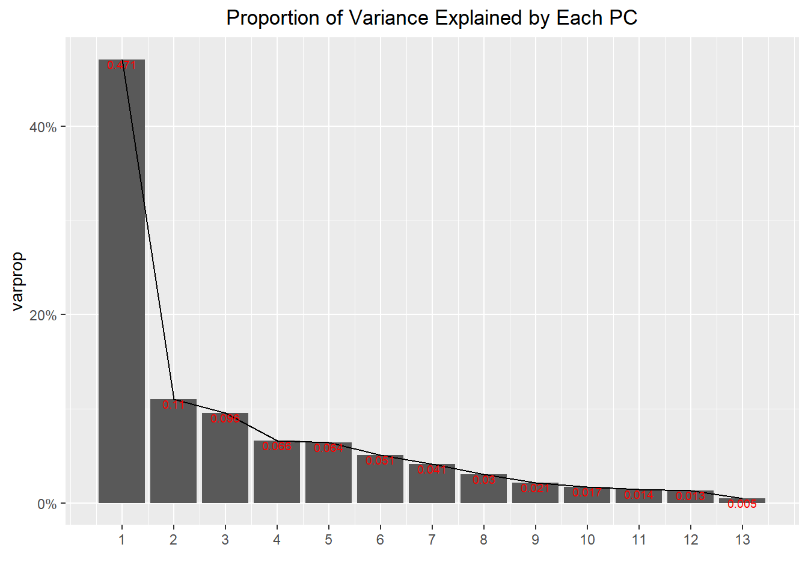

Python has always been a popular tool for a variety of reasons. However, I believe that R has the edge in certain applications, such as data visualization using ggplot.
Below, we are going to analyze some data from python first, then use R to visualize what we will learn!
# need reticulate to start communicating!
library(reticulate)Here, we load the boston dataset and conduct a Principal Component Analysis to identify meaningful clusters of houses in Boston
import pandas as pd
from sklearn.datasets import load_boston
# boston is a dictionary containing the predictors 'data', the response 'target', predictor names 'feature_names', and metadata 'DESCR'
boston = load_boston()
print(boston.DESCR)## .. _boston_dataset:
##
## Boston house prices dataset
## ---------------------------
##
## **Data Set Characteristics:**
##
## :Number of Instances: 506
##
## :Number of Attributes: 13 numeric/categorical predictive. Median Value (attribute 14) is usually the target.
##
## :Attribute Information (in order):
## - CRIM per capita crime rate by town
## - ZN proportion of residential land zoned for lots over 25,000 sq.ft.
## - INDUS proportion of non-retail business acres per town
## - CHAS Charles River dummy variable (= 1 if tract bounds river; 0 otherwise)
## - NOX nitric oxides concentration (parts per 10 million)
## - RM average number of rooms per dwelling
## - AGE proportion of owner-occupied units built prior to 1940
## - DIS weighted distances to five Boston employment centres
## - RAD index of accessibility to radial highways
## - TAX full-value property-tax rate per $10,000
## - PTRATIO pupil-teacher ratio by town
## - B 1000(Bk - 0.63)^2 where Bk is the proportion of blacks by town
## - LSTAT % lower status of the population
## - MEDV Median value of owner-occupied homes in $1000's
##
## :Missing Attribute Values: None
##
## :Creator: Harrison, D. and Rubinfeld, D.L.
##
## This is a copy of UCI ML housing dataset.
## https://archive.ics.uci.edu/ml/machine-learning-databases/housing/
##
##
## This dataset was taken from the StatLib library which is maintained at Carnegie Mellon University.
##
## The Boston house-price data of Harrison, D. and Rubinfeld, D.L. 'Hedonic
## prices and the demand for clean air', J. Environ. Economics & Management,
## vol.5, 81-102, 1978. Used in Belsley, Kuh & Welsch, 'Regression diagnostics
## ...', Wiley, 1980. N.B. Various transformations are used in the table on
## pages 244-261 of the latter.
##
## The Boston house-price data has been used in many machine learning papers that address regression
## problems.
##
## .. topic:: References
##
## - Belsley, Kuh & Welsch, 'Regression diagnostics: Identifying Influential Data and Sources of Collinearity', Wiley, 1980. 244-261.
## - Quinlan,R. (1993). Combining Instance-Based and Model-Based Learning. In Proceedings on the Tenth International Conference of Machine Learning, 236-243, University of Massachusetts, Amherst. Morgan Kaufmann.Let’s parse the data into a pandas dataframe and prepare for PCA
from sklearn import preprocessing
# always scale the data before performing PCA!
scaled_data = preprocessing.scale(boston.data)
boston_response = boston.target
boston_df = pd.DataFrame(scaled_data)
boston_df.columns = boston.feature_names
boston_df.head()## CRIM ZN INDUS ... PTRATIO B LSTAT
## 0 -0.419782 0.284830 -1.287909 ... -1.459000 0.441052 -1.075562
## 1 -0.417339 -0.487722 -0.593381 ... -0.303094 0.441052 -0.492439
## 2 -0.417342 -0.487722 -0.593381 ... -0.303094 0.396427 -1.208727
## 3 -0.416750 -0.487722 -1.306878 ... 0.113032 0.416163 -1.361517
## 4 -0.412482 -0.487722 -1.306878 ... 0.113032 0.441052 -1.026501
##
## [5 rows x 13 columns]Finally, we conduct the PCA here!
from sklearn.decomposition import PCA
pca = PCA()
pcs = pca.fit_transform(boston_df)Nothing special happened yet, but let’s now use R to plot the PCA results from python
library(tidyverse)
# load python PCA results
boston <- py$boston_df
boston_pca <- py$pca
boston_pcs <- py$pcs
# set up for scree plot
varprop <- boston_pca$explained_variance_ratio_
num_pc <- ncol(boston_pca$components_)
# plot scree-plot to see variance explained
ggplot() + geom_bar(aes(y=varprop, x=1:num_pc), stat="identity") +
labs(x = "", title = "Proportion of Variance Explained by Each PC") +
geom_path(aes(y=varprop, x=1:num_pc)) +
geom_text(aes(x=1:num_pc, y=varprop, label=round(varprop, 3)),
vjust=1, col="red", size=2.5) +
scale_y_continuous(breaks=seq(0, 1, .2), labels = scales::percent) +
scale_x_continuous(breaks=1:num_pc) +
theme(plot.title = element_text(hjust = 0.5))
Wow, the first principal component alone account for 47.1% of the variation in the dataset, where the rest collectively account for the other roughly 50%. Let’s examine the significance of each predictor by looking at a loadings plot for the first PC:
PC1 <- round(boston_pca$components_[, 1], 3)
ggplot() + geom_bar(aes(y=PC1, x=colnames(boston)), stat="identity") +
labs(title = "Predictor Contributions in PC1", y = "", x = "Predictors") +
theme(plot.title = element_text(hjust = 0.5))
For PC1, it seems that high PC1 socres are associated with houses with especially high proportion of owner-ccupied units built prior to 1940 (Age), especially low proportion of residential land zoned for lots over 25,000 square feet (ZN), low average number of rooms per dwelling (RM), high weighted distances to five Boston employment centres (DIS), high per capita crime rate by town (CRIM), high proportion of non-retail business acres per town (INDUS), and high index of accessibility to radial highways (RAD). Hence, houses ranking high on PC1 seems to be undesirable houses that are old, incontinent to travel to work, small, unsafe to live in, and generally around shopping districts perhaps in the down-town area with fast access to highways. As we will see below, this is why houses with high PC1 socres have low selling prices.
Finally, let’s visualize the boston dataset again projected into the 2-dimensional space of PC1 and PC2:
library(viridis)
ggplot() +
geom_point(aes(x = boston_pcs[, 1], y= boston_pcs[, 2],
color = py$boston_response)) + scale_color_viridis(option = "D") +
labs(title = "Boston Dataset in PC2 vs PC1 Projection Space",
x = "PC1 scores", y = "PC2 scores", color = "House Prices (in $1000s)") +
theme(plot.title = element_text(hjust = 0.5), legend.title = element_text(size = 8))
Fascinating; we obtain a domed structure-looking plot centered around PC1=0.5. In general, houses with high median prices tend to have low PC1 scores, while houses with especially low median prices tend to have high PC1 scores, which is inline with our intepretation of the PC1 loadings before. PC2 is less defined in terms of housing prices, where both highly priced and low priced houses can have low PC2 scores.
In conclusion, Python may have the edge in machine learning tools and applications, but I find R’s data visualization abilities to be superior in terms of customization and syntactic structure (ggplot grammar is very intuitive and much cleaner in my opinion versus matplotlib).
Thanks for sticking with me! Here’s a meme for all the PCA lovers out there…